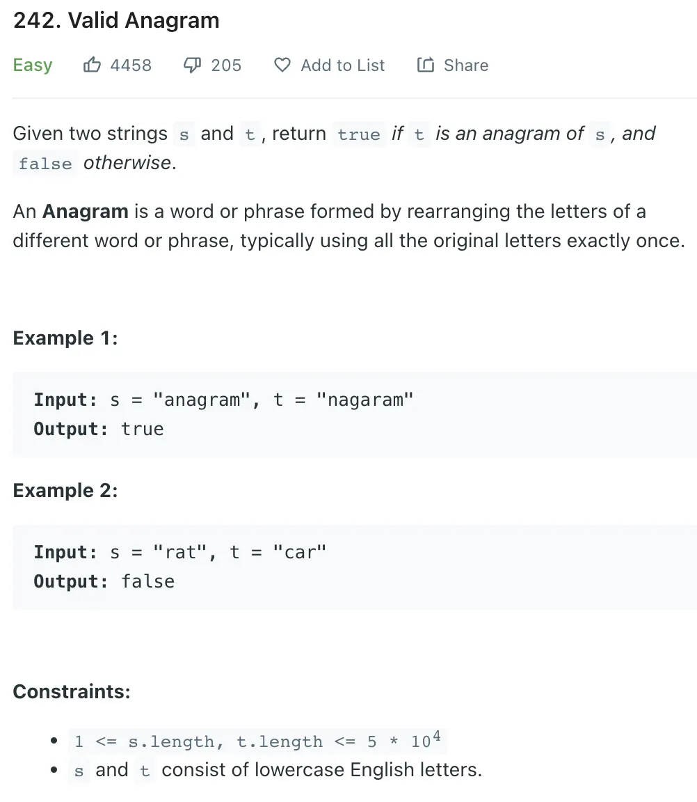

242. Valid Anagram
Question

✍🏽 My Solution
Runtime: 7 ms, faster than 46.15% of Java online submissions for Valid Anagram. Memory Usage: 44.6 MB, less than 37.08% of Java online submissions for Valid Anagram.
// 思路：將s和t由小到大排列，比對每個字符串是否相同，不同則返回false
class Solution {
public boolean isAnagram(String s, String t) {
char[] sChar = s.toCharArray();
char[] tChar = t.toCharArray();
if (sChar.length != tChar.length) return false;
Arrays.sort(sChar);
Arrays.sort(tChar);
for (int i = 0; i < sChar.length; i++) {
if (sChar[i] != tChar[i]) return false;
}
return true;
}
}
🧠 Thought Process
- Why did I choose this particular implementation?
- 判斷s和t長度不同返回false
- 將s和t由小到大排列，比對每個字符串是否相同，不同則返回false
-
What is the time/space complexity of my solution? How do I know?
-
time: $O(nlogn)$
排序的时间代价为
O(nlogn)，遍历序列的时间代价是O(n)，故渐进时间复杂度为 O(nlogn + n) = $O(nlogn)$。 -
space: $O(logn)$。快速排序的空間複雜度為O(logn)
- What mistakes did I make?
- 忘了考慮到長度不同的情況
- What can I do next time to make sure I don't make the same mistakes again?
- 要再多想一點測試案例
-
✍🏽 My Solution - 哈希表
Runtime: 28 ms, faster than 11.10% of Java online submissions for Valid Anagram.
Memory Usage: 46.3 MB, less than 20.65% of Java online submissions for Valid Anagram.
// 2022.10.04
class Solution {
public boolean isAnagram(String s, String t) {
if (s.length() != t.length()) return false;
HashMap<Character, Integer> map = new HashMap<>();
int n = s.length();
for (int i = 0; i < n; i++) {
map.put(s.charAt(i), map.getOrDefault(s.charAt(i), 0) + 1);
}
for (int i = 0; i < t.length(); i++) {
char c = t.charAt(i);
if (map.containsKey(c)) {
int count = map.get(c);
if (count == 0) return false;
map.put(c, count-1);
} else {
return false;
}
}
return true;
}
}
class Solution {
public boolean isAnagram(String s, String t) {
if (s.length() != t.length()) return false;
HashMap<Character, Integer> map = new HashMap<Character, Integer>();
for (int i = 0; i < s.length(); i++) {
char c = s.charAt(i);
int count = 1;
if (map.containsKey(c)) {
count += map.get(c);
}
map.put(c, count);
}
for (int i = 0; i < t.length(); i++) {
char c = t.charAt(i);
if (!map.containsKey(c)) {
return false;
}
int count = map.get(c);
if (count == 0) return false;
map.put(c, count-1);
}
for (int i = 0; i < s.length(); i++) {
char c = s.charAt(i);
if (map.get(c) != 0) {
return false;
}
}
return true;
}
}
// a,3 n,1 g,1 r,1 m,1
// a,0 n,0 g,0 r,0 m,0
🧠 Thought Process
- Why did I choose this particular implementation?
- 判斷s和t長度不同返回false
- 之後是用別的解法，參考王爭一一映射
- What is the time/space complexity of my solution? How do I know?
- time: $O(n)$
- space: $O(n)$。
Solution #1 [王爭-一一映射]
Runtime: 8 ms, faster than 39.57% of Java online submissions for Valid Anagram. Memory Usage: 44 MB, less than 46.16% of Java online submissions for Valid Anagram.
class Solution {
public boolean isAnagram(String s, String t) {
if (s.length() != t.length()) {
return false;
}
int[] nums1 = new int[26];
for (int i = 0; i < s.length(); ++i) {
char c = s.charAt(i);
nums1[c-'a']++;
}
int[] nums2 = new int[26];
for (int i = 0; i < t.length(); ++i) {
char c = t.charAt(i);
nums2[c-'a']++;
}
for (int i = 0; i < 26; ++i) {
if (nums1[i] != nums2[i]) {
return false;
}
}
return true;
}
}
class Solution {
public boolean isAnagram(String s, String t) {
int [] a= new int[256];
for(int i=0;i<s.length();i++){
a[s.charAt(i)]++;
}
for(int j=0;j<t.length();j++){
a[t.charAt(j)]--;
}
for(int k=0;k<a.length;k++){
if(a[k]!=0){
return false;
}
}
return true;
}
}
func isAnagram(s string, t string) bool {
alphabet := make([]int, 26)
sBytes := []byte(s)
tBytes := []byte(t)
if len(sBytes) != len(tBytes) {
return false
}
for i := 0; i < len(sBytes); i++ {
alphabet[sBytes[i]-'a']++
}
for i := 0; i < len(tBytes); i++ {
alphabet[tBytes[i]-'a']--
}
for i := 0; i < 26; i++ {
if alphabet[i] != 0 {
return false
}
}
return true
}
Explanation (in my words)
- How does their solution work?
- 建立一個長度為26的數組，儲存 s 字符串 a-z 出現的次數
- 拿 t 比對，將與數組有相同的值剪掉次數
- 但比較浪費空間
- What is the space/time complexity of their solution?
- time: O(n)
- space: O(1)